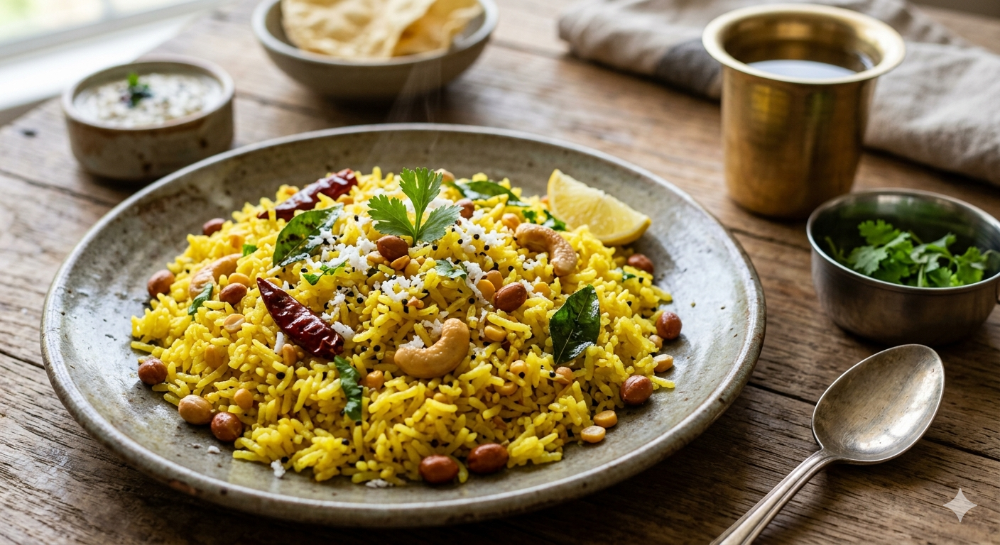

Lemon Rice

Here is a classic, traditional South Indian Lemon Rice (also known as Chitranna or Nimmakaya Pulihora) recipe. It is tangy, nutty, aromatic, and incredibly easy to make.
Ingredients
For the Rice:
- Cooked Basmati or Sona Masuri Rice: 3 cups (cooled down completely, with grains separated)
- Lemon Juice: 3-4 tablespoons (freshly squeezed, adjust to your taste)
- Turmeric Powder: ½ teaspoon
- Salt: To taste
For the Tempering (Tadka):
- Oil: 2 tablespoons (sesame oil or peanut oil works best)
- Mustard Seeds: 1 teaspoon
- Urad Dal (Split black gram): 1 teaspoon
- Chana Dal (Bengal gram): 1 tablespoon
- Peanuts: 3 tablespoons (raw or roasted)
- Cashew Nuts: 8-10 (optional, split)
- Green Chilies: 2-3 (slit horizontally)
- Dry Red Chilies: 2 (broken)
- Ginger: 1 teaspoon (finely chopped or grated)
- Curry Leaves: 10-12
- Asafoetida (Hing): A generous pinch
For Garnish:
- Fresh Coriander (Cilantro): 2 tablespoons (finely chopped)
- Fresh Grated Coconut:1 tablespoon (optional)
Step-by-Step Instructions
Prep the Rice Base
Spread the pre-cooked, cooled rice onto a wide plate. Sprinkle the turmeric powder, salt, and 1 teaspoon of oil gently over it. Fluff with a fork so the grains do not break but are evenly mixed with the salt and turmeric. Prepare the Tempering (Tadka)
Heat 2 tablespoons of oil in a pan over medium-low heat. Add the peanuts and fry for 1-2 minutes until they start turning golden. Add the cashews, chana dal, and urad dal. Sauté everything continuously until the lentils become crisp and light brown.Add the Aromatics
Turn down the heat slightly. Add the mustard seeds and let them pop. Immediately add the asafoetida (hing), ginger, green chilies, dry red chilies, and curry leaves. Fry for 30 seconds until the curry leaves turn crisp and fragrant.Combine Everything
Turn off the heat. Pour this warm tempering mixture directly over the prepared rice. Add the freshly squeezed lemon juice over the mixture.Final Mix and Garnish
Gently mix the rice using a silicone spatula or a flat ladle from the bottom up until the entire dish turns a uniform bright yellow color. Garnish with chopped coriander leaves and grated coconut. Let it sit for 15 minutes before serving so the flavors integrate beautifully